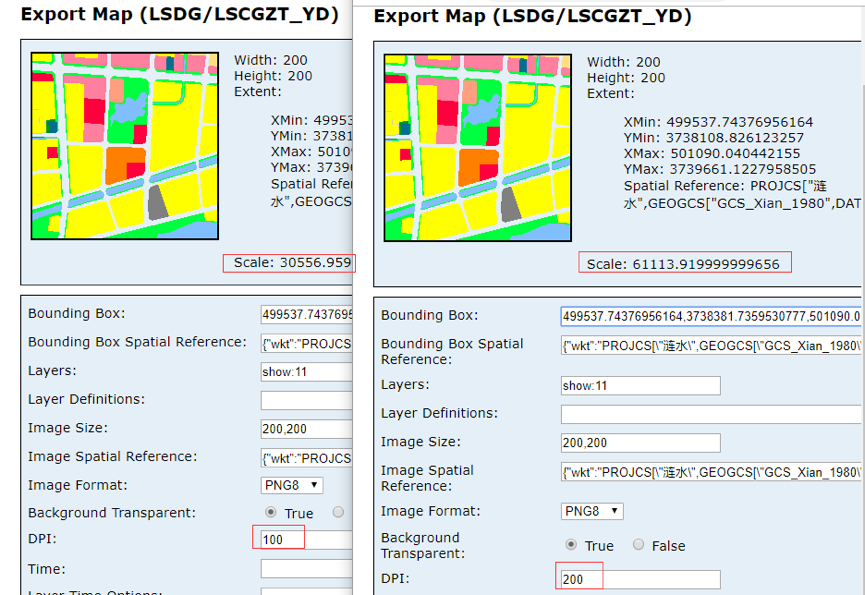
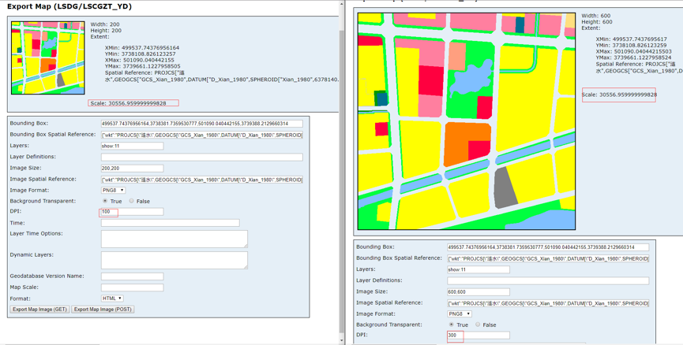

地图打印输出作为webgis较为常用的一个模块，由于其实现过程和参数较为复杂，对其功能的调整和扩展，通常是前端开发中一个较为头疼的事情 。本文将结合项目经验介绍前端实现地图导出三个主要途径的实现过程及注意事项。功能有限，内容不全面，如有错误和不足请指出。
实现方式
纯前端
支持wmts服务（1）、arcgis服务（2）和GraphicLayer（3）三种类型组合导出图片。
当系统中接入wmts服务时，ArcgisServer自带的打印服务和前端截图插件不能满足需求（截图wmts图层为空白），具体原因就未做深入；刚好项目碰到这个问题，好几个重要功能都受到影响,因此有了这个解决方案
wmts服务添加到map后arcgisapi会根据当前视图计算用于显示瓦片，并通过二维变换让所有图片拼接显示。这些变换的参数在图层对象中都能获取到，根据这些变换参数可以将瓦片手动拼成‘一张图片’。功能主要解决的问题还是资源跨域问题，瓦片要转换为base64编码的图片，然后拼合成一张图片，最后在使用前端截图插件dom-to-image或html2canvas进行图片生成。
1.初始化map对象，div显示层级为负，设置map的中心点和比例尺
2.添加底图和要素图形
(1)有wmts:
为保证wmts服务的瓦片获取正确无误，必须全部添加到map上，监听每个服务的update-end事件，不添加arcgis服务
(2)无wmts:
arcgis服务只需添加一个即可，我们只是需要map初始化完成后的extent，监听服务的load事件
3.待上述事件全部抛出，开始打印准备，创建打印根节点元素(层级设为负)
(1)wmts服务瓦片获取并转为base64，拼合做位置变换，完成后返回服务图片容器的元素节点
(2)arcgis服务export图片，dpi、bbox、height、width、sr、visibleLayers，每个服务都要进行请求，都完成后返回服务图片容器的元素节点（因为gp服务导出的图片不透明，所以每个服务都要请求）
4、将3中返回的元素加入打印根结点元素，克隆map中要素图层的svg元素，加入打印根节点元素
5、使用截图插件出图，让完成事件抛出
var exportImg = new ExportMapImg({
center: this.map.extent.getCenter(),
scale: this.map.getScale(),
WMTSLayers: [new WMTS(url,...),new WMTS(url,...)],
ArcLayers: [{url:'http://192.168.200.113:6080/arcgis/rest/services/CDYZT/CHDZTGH/MapServer',visibleLayers:[101]}],
dpi: this.dpi,
width: width,
height: height
});
on.once(exportImg, 'export-success', function (url) {
exportImg.downLoad(url);
exportImg = null;
});
IE支持GraphicLayer导出
html2canvas在ie中使用不支持svg的输出；
将svg输出为Blob地址和svgbase64地址赋给img，然后绘制在canvas会出现跨域而污染画布不能使用toBlob()、toDataURL()、getImageData()；
IE报‘SCRIPT5022: SecurityError’错误：网上说的是跨域原因，解决方案有3个：
img. crossOrigin设置 、插件和ajax从后台获取
1.插件：canvg.js，以及canvg的依赖rgbcolor.js、stackblur-canvas.js，在plugins目录下，请在项目中引用，本人的引入位置：成功(只需要引入插件依赖即可，处理部分已经封装)
2.后台（一个传入什么返回什么的接口）：失败(SCRIPT5022: SecurityError)
从使用了后台测试后基本排除了跨域的原因，因为直接使用base64Png图片不设置图片跨域绘制到canvas里，canvas的像素操作不受影响，这也就说明问题可能出在IE的canvas对象对svg图片的支持上
所以目前不考虑后台转化支持的话，前端只能通过canvg.js将svg绘制在canvas里（个人见解，如果大家有更好的方式请务必告知一下）
DPI相关内容
dpi=96:每英寸点数
1in=2.54cm
一般情况下，提高export接口导出图片的精度，如下图：（地址）单纯提高dpi。从结果来看范围是一致了，但是出图的比例尺变化了

将dpi和尺寸乘以相同倍数，如下图：导出范围一致，比例尺一致

举例：假如需要打印一张照片2inX2in（dpi=100）这时像素尺寸应为200pxX200px
假如还需要打印一张照片2inX2in (dpi=300) 这时像素尺寸应为600pxX600px
当只有像素尺寸200pxX200px图片，打印一张2inX2in的照片dpi=300，打印机会进行栅格化处理，将（200px→600px）X (200px→600px)输出打印，这种情况下打印的照片应该会出现平时所说的马赛克
以上内容个人见解，正确性未知；为什么要讲这个内容？
因为wmts服务切片一般都是默认的dpi=96，所以想要输出更高精度的图片，也就和上面例子中一样，要将切片栅格化放大处理后，在输出，结果就是严重失真
因此对更高dpi未做支持，初始化参数中有这个内容，那只有arcgis服务export接口会使用到，传高了服务返回还会变慢，所以默认96；
GP 服务
GP服务图片导出：一张图和多规基线用的就是这个方式，但是很多项目都接入的wmts服务，导出的图片没有wmts图层的内容，也就有了前面的前端解决方案
为了对照，我们还是说一下GP服务的使用：（地址）
打印模板可配置的内容还有很多详见(api)
//创建地图打印对象
var printMap = new PrintTask(this.config.serviceUrl);
//创建地图打印模版
var template = new PrintTemplate();
//创建地图的打印参数，参数里面包括：模版和地图
var params = new PrintParameters();
//输出图片的空间参考
printMap.outSpatialReference = this.map.spatialReference;
//打印图片的各种参数
template.exportOptions = {
width: this.map.width,
height: this.map.height,
dpi: 96
};
//打印输出的格式
template.format = 'JPG';
//输出地图的布局
template.layout = 'MAP_ONLY';
// PrintTemplate
//设置参数地图
params.map = this.map;
//设置参数模版
params.template = template;
//运行结果
printMap.execute(params, lang.hitch(this, function (result) {
if (result) {
console.log(result);
}
}), lang.hitch(this, function (error) {
console.log(error);
}));
}